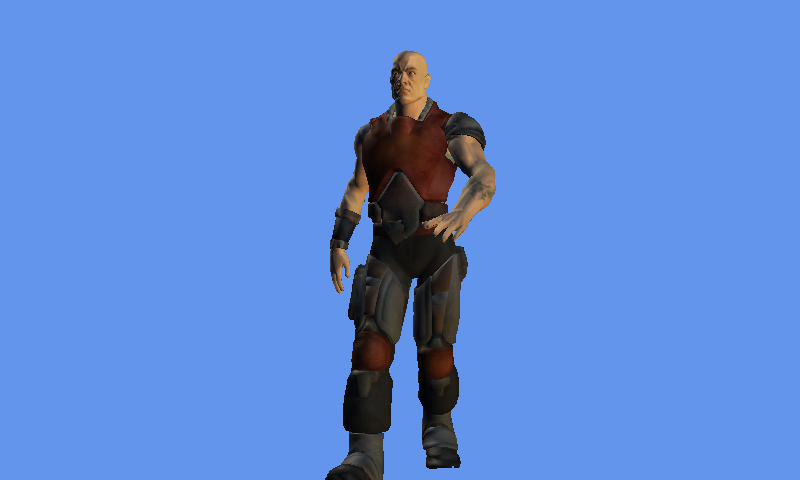

Skinning Sample
Ported from Microsoft's XNA 4.0 Skinned Model Sample.
Source for this sample on GitHub ↗

Play ▸Opens in a new tab.
About this sample
The content processor prepares a skinned character model and its animation data. The sample's animation player updates the bones while the game renders the textured character with XNA's skinned effect.
Controls
| Action | Control |
|---|---|
| Rotate the view | Arrow keys or W, A, S, D |
| Zoom | Z and X |
| Reset the view | R |
| Exit | Escape |